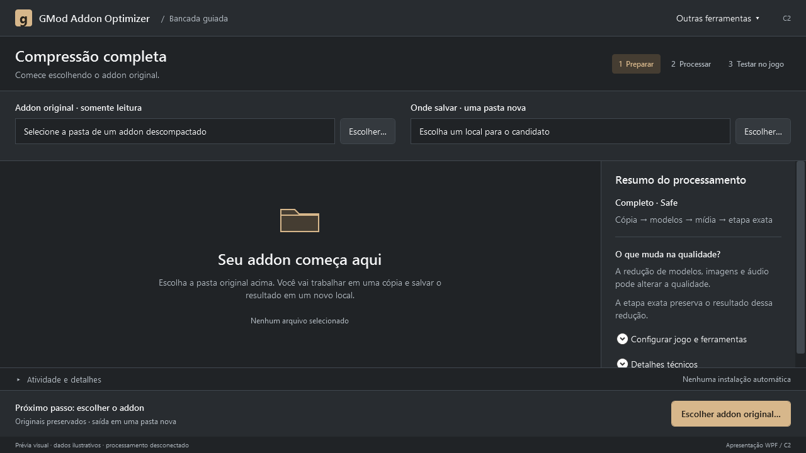

C2 · Bancada guiada
O visual técnico da Bancada, com uma sequência mais clara: escolher o addon, conferir o processamento e gerar um candidato para testar.

Começar sem procurar
Origem e destino em destaque, com uma ação separada para cada pasta.
Entender antes de executar
Resumo do que será aplicado, com detalhes técnicos recolhidos.
Acompanhar o próximo passo
Preparação, execução e resultado têm ações próprias e claramente identificadas.
Telas renderizadas diretamente dos controles WPF. Dados e progresso são ilustrativos; nenhum processamento está conectado nesta apresentação. A integração no programa aguarda aprovação. A referência é a área cliente em 1280 × 720 a 96 DPI, sem a moldura do Windows.
Decisões da revisão · Três opções anteriores